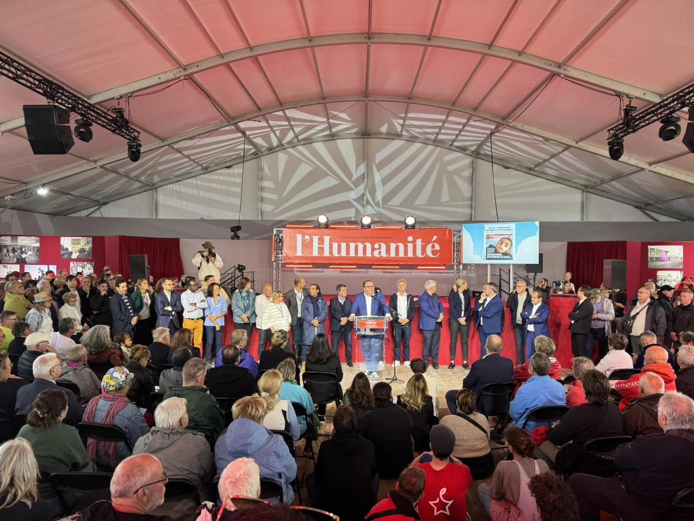
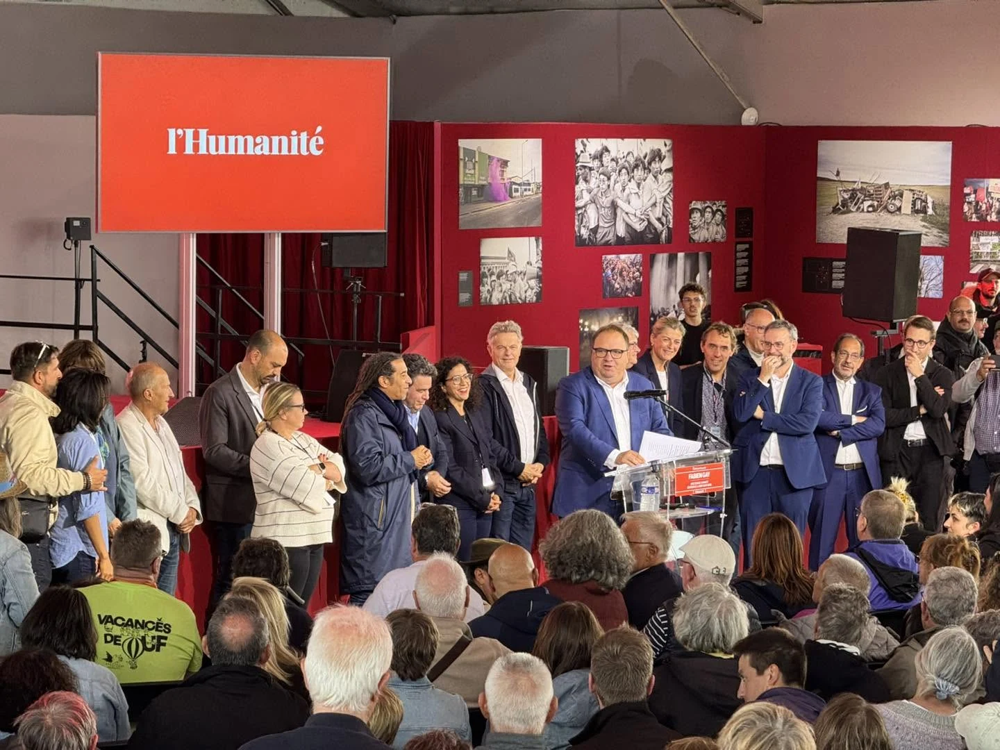
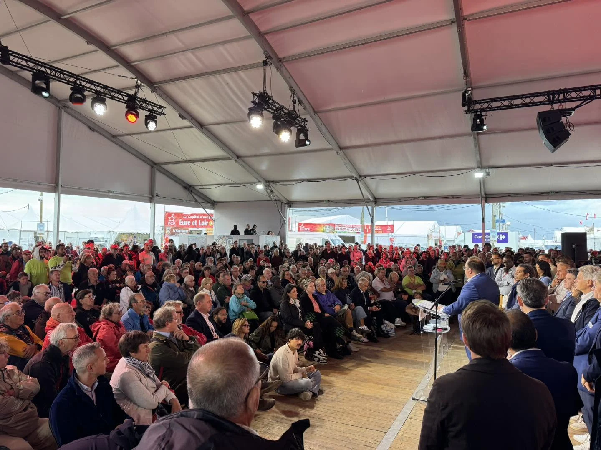

Publication relayée par le PCF 79
L’ouverture de la 90e Fête de l’Humanité
Date de mise à jour indiquée par Facebook · 12 septembre 2025
Texte de la publication · Fabien Gay
C’est parti pour la 90e édition de la Fête de l'Humanité !
L’avenir est à inventer ensemble pendant 3 jours …



Sources
Fabien Gay · publication relayée par le PCF 79 · bibliothèque Facebook · AR-0002-FB-01020
À lire aussi · La Fête de l’Humanité 2025, une fête populaire portée par les bénévoles